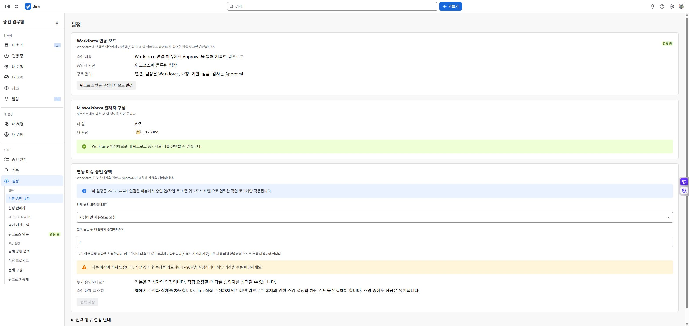

관리자 운영 가이드
도입 순서
적용 프로젝트 → 기본 승인 규칙 → 단독 팀 또는 Workforce 연결 → 승인 규칙 → 시간 추적 제공자 → 시험 사용자 검증 순서로 설정하세요. 앱 접근 제한을 켜기 전에 요청자·승인자·팀장에게 필요한 명부와 권한을 준비합니다.
| 설정 |
운영상 의미 |
| 상태 변경 승인 |
서버 기본 꺼짐. 현재 설정 UI 미연결이므로 출시 기능 제외 |
| Workforce 연동 |
기본 꺼짐. 켜기와 연결 완료가 모두 필요 |
| 워크로그 자동 요청 |
저장 후 요청 접수 여부. 저장 성공과 접수 성공은 별도 |
| 자동 마감 일수 |
0은 꺼짐. 조직의 유예일 설정 |
| 설명 원문 보관 |
기본 꺼짐. 꺼져도 지문·일부 미리보기가 남을 수 있음 |
| 워크로그 통제 |
기본 보호 설정과 진단·해제 절차 확인 |
연동 모드에서 팀·팀장과 Workforce가 관리하는 연결 이슈 설정은 Workforce에서 변경합니다. Approval에 표시되는 유효 정책과 관리 위치를 확인하고 서로 다른 원장 값을 중복 편집하지 않습니다.
기록과 저장량
관리자 기록 화면에서 승인·인증·워크로그 변경·설정 이력을 구분합니다. 저장량은 추정치이며 청구서나 실시간 사용량과 같다고 보장하지 않습니다.
보관 정리는 범위 선택 → 내보내기 → 파일 열기·행수와 기간 확인 → 안전한 보관 → 확인 후 허용 범위 정리 순서로 진행합니다. 승인 원장·활성 인증·정상 출처 근거 등 보호 대상은 내보냈다고 모두 삭제할 수 있는 것이 아닙니다. 대량 사용에서는 증가 속도와 남은 용량을 주기적으로 검토하세요.
장애와 변경
결정·저장 결과가 불명확하면 원래 기록 ID와 현재 상태를 먼저 확인합니다. 기능을 끄거나 기간을 열어 문제를 우회하기 전에 기존 승인·잠금에 미치는 영향을 확인하세요. 앱 제거 전에는 통제 해제가 필요합니다.
문서 홈 · English
